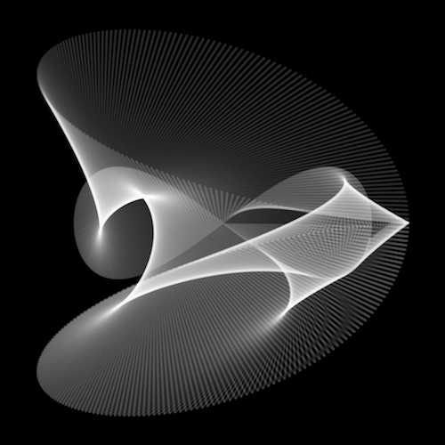
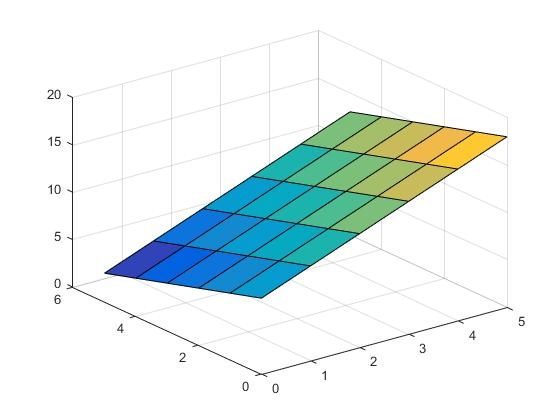

Definición
La computación gráfica o gráficos por ordenador es el campo de la informática visual, donde se utilizan computadoras tanto para generar imágenes visuales sintéticamente como integrar o cambiar la información visual y espacial probada del mundo real. Este campo puede ser dividido en varias áreas: Interpretado 3D en tiempo real (a menudo usado en juegos de vídeo), animación de computadora, captura de vídeo y creación de vídeo interpretado, edición de efectos especiales (a menudo usado para películas y televisión), edición de imagen, y modelado (a menudo usado para ingeniería y objetivos médicos). El desarrollo en la gráfica realizada por computadora fue primero alimentado por intereses académicos y patrocinio del gobierno. Sin embargo, cuando las aplicaciones verdaderas mundiales de la gráfica realizada por computadora (CG) en televisión y películas demostraron una alternativa viable a efectos especiales más a las tradicionales y las técnicas de animación, los comerciales han financiado cada vez más el avance de este campo.
Gráficos 2D de computadora
El primer avance en la computación gráfica fue la utilización del tubo de rayos catódicos. Hay dos acercamientos a la gráfica 2d: vector y gráficos raster. La gráfica de vector almacena datos geométricos precisos, topología y estilo como posiciones de coordenada de puntos, las uniones entre puntos (para formar líneas o trayectos) y el color, el grosor y posible relleno de las formas. La mayor parte de los sistemas de vectores gráficos también pueden usar primitivas geométricas de forma estándar como círculos y rectángulos etc. En la mayor parte de casos una imagen de vectores tiene que ser convertida a una imagen de trama o raster para ser vista. Los gráficos de tramas o raster (llamados comúnmente Mapa de bits) es una rejilla bidimensional uniforme de pixeles. Cada pixel tiene un valor específico como por ejemplo brillo, transparencia en color o una combinación de tales valores. Una imagen de trama tiene una resolución finita de un número específico de filas y columnas. A menudo combina la trama y lo gráficos vectorizados en formatos de archivo compuestos (pdf, swf, svg).

Gráficos 3D de computadora
Con el nacimiento de las estaciones de trabajo (como las máquinas LISP, Paintbox computers y estaciones de trabajo Silicon Graphics) llegaron los gráficos 3D, basados en la gráfica de vectores. En vez de que la computadora almacene la información sobre puntos, líneas y curvas en un plano bidimensionales, la computadora almacena la posición de puntos, líneas y típicas caras (para construir un polígono) en un Espacio de tres dimensiones. Los polígonos tridimensionales son la sangre de prácticamente todos los gráficos 3d realizados en computadora. Como consiguiente, la mayoría de los motores de gráficos de 3D están basados en el almacenaje de puntos (por medio de 3 simples coordenadas Dimensionales X,Y,Z), líneas que conectan aquellos grupos de puntos, las caras son definidas por las líneas, y luego una secuencia de caras crean los polígonos tridimensionales. El software actual para generación de gráficos va más lejos de sólo el almacenaje de polígonos en la memoria de computadora. Las gráficas de hoy no son el producto de colecciones masivas de polígonos en formas reconocibles, ellas también resultan de técnicas en el empleo de Shading(Sombreadores), texturing(Texturizado o mapeado) y la rasterización (En referencia a mapas de bits).
